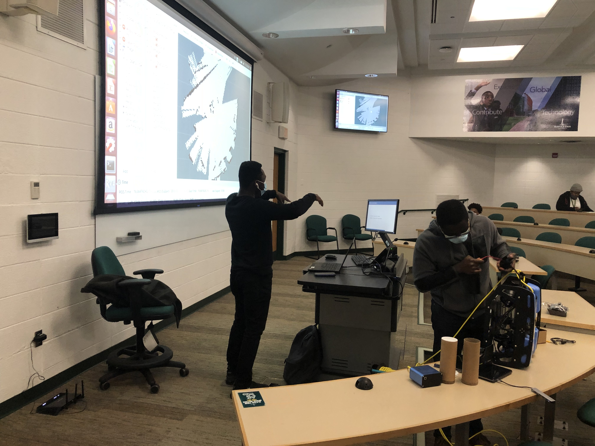
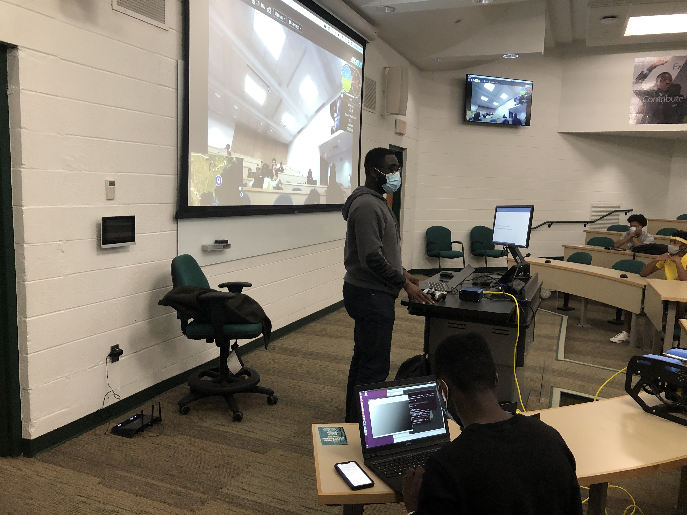
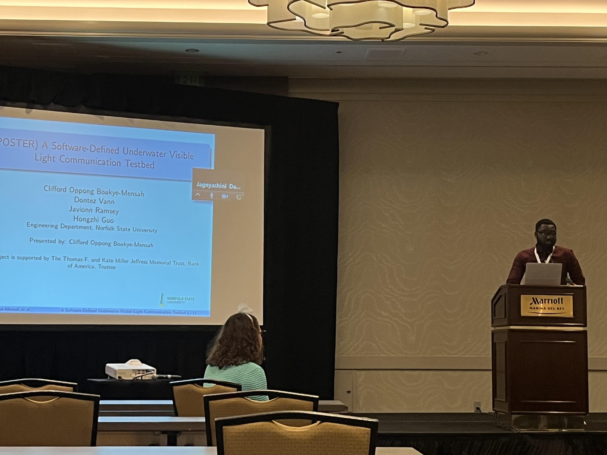
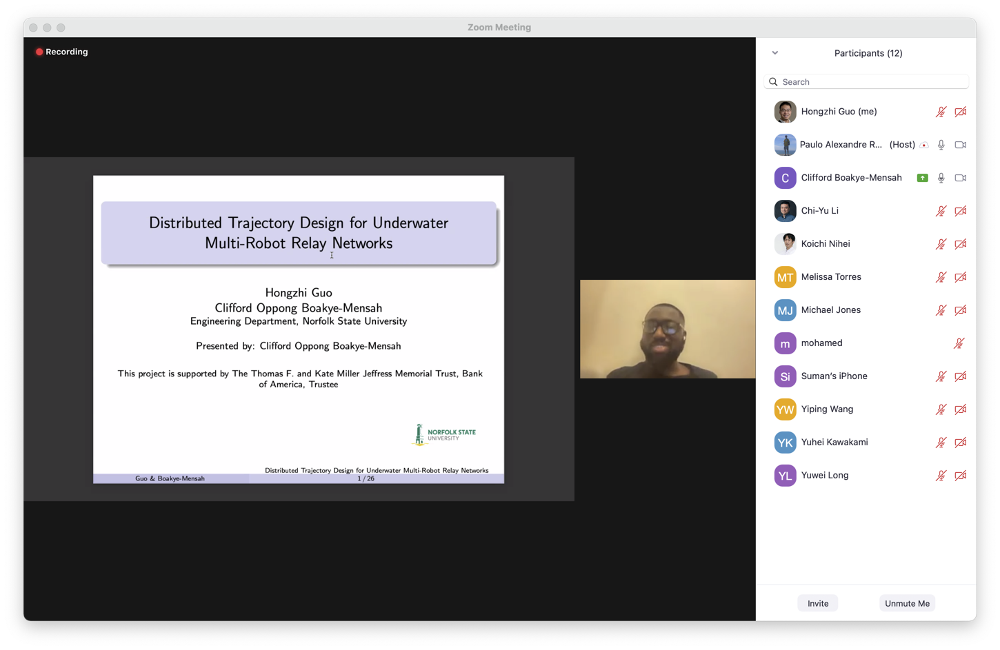
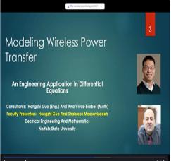
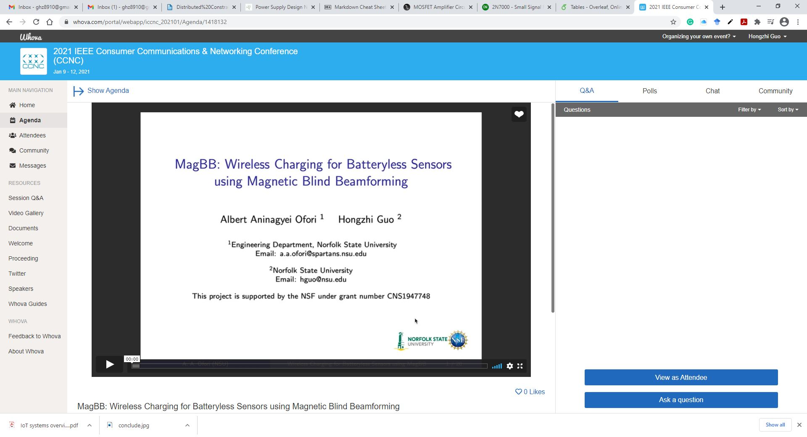

Activities
Courses
Guest lecture, EEN100 Introduction to Engineering: Ground and Underwater Robots, Fall 2021


Guest lecture, MTH382 Intro Applied Math: Applications of Fourier Transform in Wireless Signal Processing, Fall 2021
Seminars/Conferences
MS student Clifford Boakye-Mensah presented a paper in IEEE DCOSS, May 2022. Supported by Jeffress Memorial Trust.

Attended “QEM/NSF Virtual Workshop Leveraging your Success: Research Beyond the HBCU-UP Program” on May 6, 2022, and presented HBCU-RIA project as a 3-min talk.
Senior design students Vann Dontez and Javionn Ramsey won the 3rd place finishers at the IEEE Hampton Roads Senior Capstone Competition, April 2022. Part of their project was supported by Jeffress Memorial Trust.
Attended “QEM MSI Proposal Development Workshop for the National Science Foundation’s Directorate for Engineering” April 14 to 15, 2022
MS student Clifford Boakye-Mensah presented a paper in IEEE CCNC, January 2022. Supported by Jeffress Memorial Trust.

“Laplace Meets Tesla in a Differential Equations Class”, Christopher Newport University, Department of Mathematics Research Colloquium, with Dr. Maila Brucal-Hallare, 10-07-2021
“Modeling Wireless Power Transfer”, SUMMIT-P workshop for College Math instructors (with Dr. Shahrooz Moosavizadeh and Dr. Ana Vivas Barber), 04-01-2021

MS student Albert Ofori presented a paper in IEEE CCNC, January 2021. Supported by NSF.
